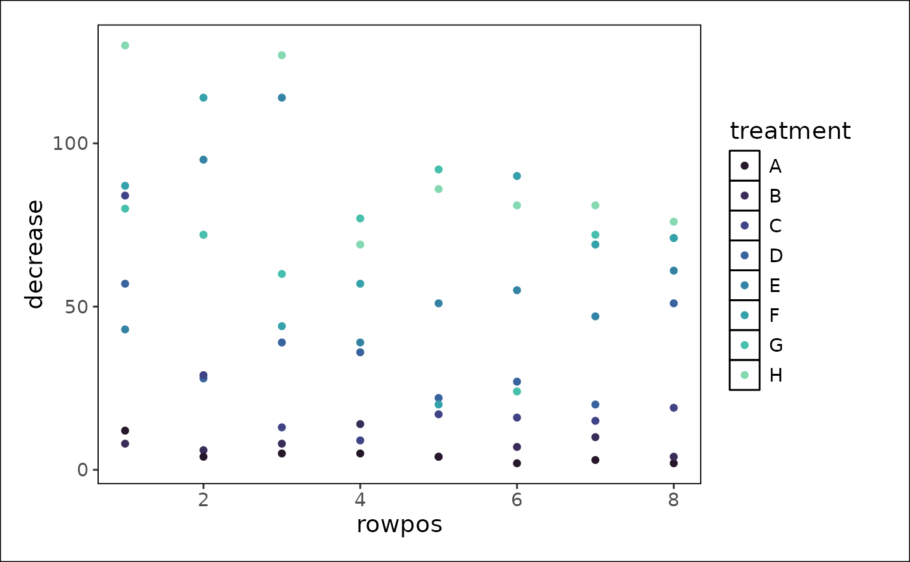

R/theme_noaa.R
theme_noaa.RdAdd NOAA theming to ggplot2 object. The palette is from the 'viridis' package, which contains palettes distinguishable by those with color vision deficiency.
theme_noaa(discrete = TRUE, ...)A list applying a theme to a ggplot2 object.
ggplot2::ggplot(data = OrchardSprays,
ggplot2::aes(x = rowpos,
y = decrease,
color = treatment)) +
ggplot2::geom_point() +
theme_noaa()
